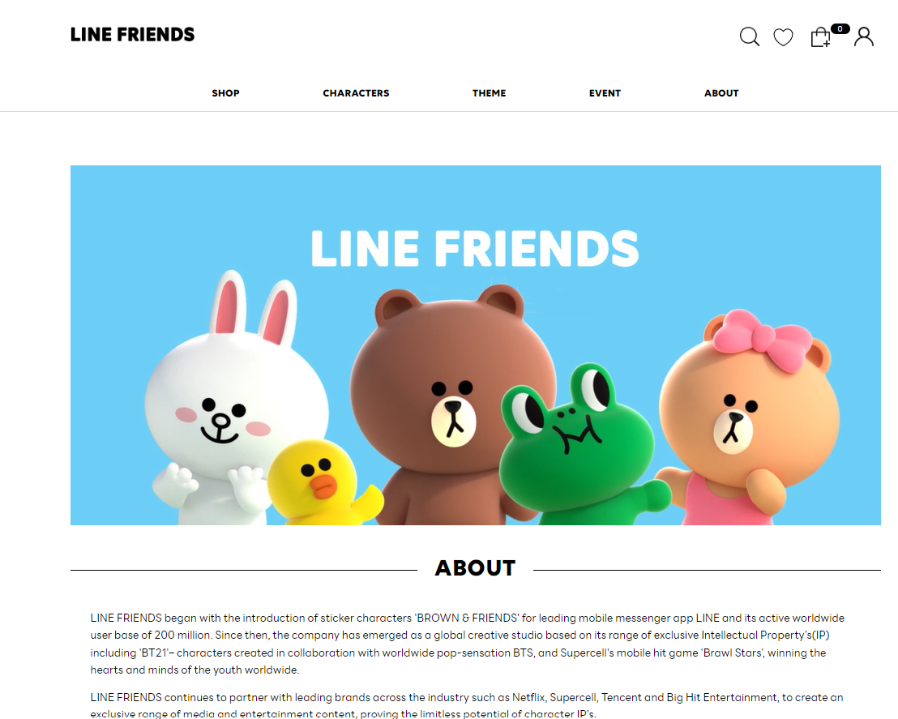
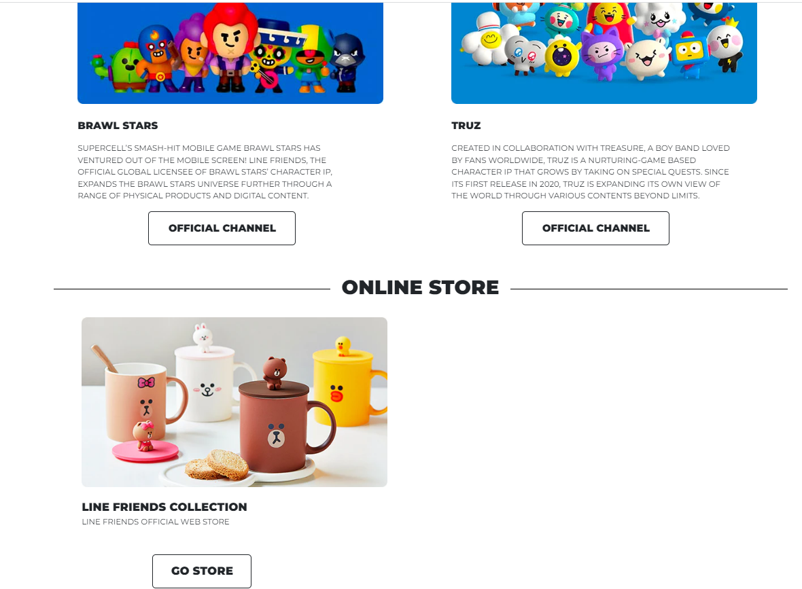
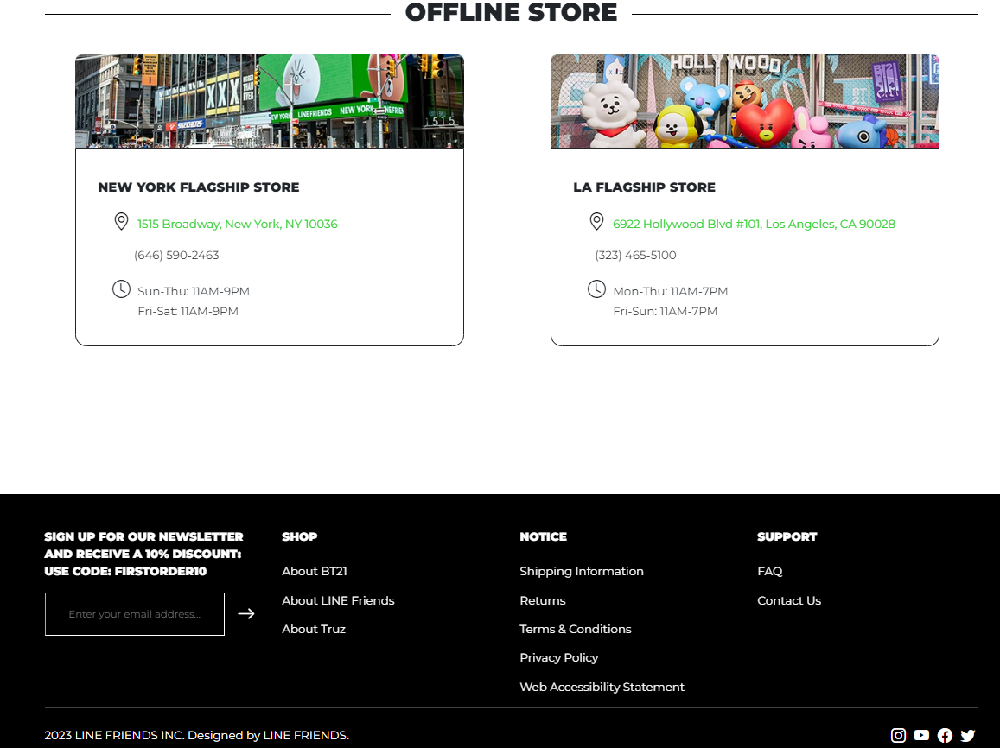

The Web Design Journey
04 Oct 2023| Original LINE Friends About Page | Recreation LINE Friends About Page |
|  |  |
 |
 |
 |
 |
 |
 |
Learning about web page development and how to use UI frameworks like Bootstrap 5 can be intimidating and frustrating. However, once you get the hang of it, web page development can be fun and interesting.
A Love-Hate Relationship
Utilizing UI frameworks like Bootstrap can make designing web pages significantly easier. Especially for novice web page developers, Bootstrap is a helpful tool that helps you create visually complex, aesthetically pleasing interfaces. Bootstrap has predefined classes that help you incorporate different elements that may be harder to implement on your own with raw HTML and CSS. For example, Bootstrap has a predefined class called “navbar” that allows you to easily create a navigation bar at the top of a web page. Bootstrap also has high-quality icons that are free to use and easy to implement, which can be used to build the navigation bar or other parts of a webpage. In the images above, I used Bootstrap icons for the magnifying glass, heart, shopping bag, and outline of a person.
Although Bootstrap is a helpful tool when learning about web design, it can also be frustrating to use. From a novice’s perspective, as I’ve only been learning how to use Bootstrap for the past week and a half, I still find the framework a bit difficult to use. Although I have an idea of how to implement various elements, I have a hard time remembering the syntax of Bootstrap classes. When building web pages, I often refer back to Bootstrap documentation guides or the source code from previous web pages I built to see how I implemented certain elements like navigation bars or how I styled a button to look a certain way. Bootstrap can also become frustrating to use when a part of my web page doesn’t appear the way I wanted it to look even though I followed the Bootstrap documentation guide and/or source code from a previous project.
Making Learning Fun
Currently in ICS 314, an introduction to software engineering class at my university, I’m learning about UI Design using Bootstrap 5 to create web pages. To get us accustomed to Bootstrap and web development, one of our recent assignments was to recreate a web page of our choice. I chose to recreate the About page from the LINE Friends Official Store website, wanting to learn in a fun way.
Recreating the About section was fun but challenging. Although I had some knowledge about how to design a web page using Bootstrap from previous introductory assignments, I initially struggled with recreating the web page. I knew what components I needed to recreate the web page but didn’t have a good idea of how to implement said components. For example, I knew I needed to use Bootstrap’s navbar class to create the top menu of my page but wasn’t quite sure how to implement it using code. I had to refer back to previous assignments to figure out how to add the navigation bar and its elements such as the LINE Friends logo and dropdown menus. However, once I got the hang of it, I started to have fun implementing the different parts of my webpage. I enjoyed figuring out how to implement different sections of the About page and watching my web page slowly come together. It was also rewarding to see that my struggles and hard work paid off when I compared my web page with the actual LINE Friends webpage, observing that my web page looked very similar to the real thing. Although I struggled with implementing various features in my recreated web page, the assignment helped me have a better understanding of how to utilize CSS and implement different Bootstrap classes, which helped me design other simpler web pages.